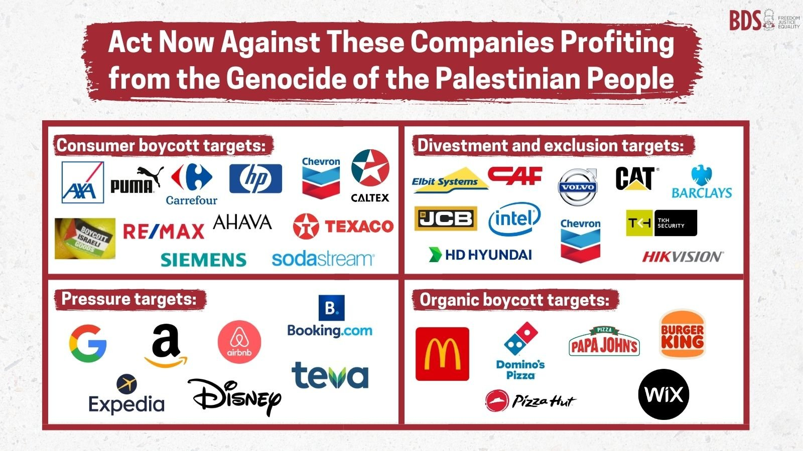

Boycott Products Supporting Occupation
By avoiding certain products, you can make an economic impact and send a clear message.
Learn more on BDS movement here!
BDSmovement.netBy avoiding certain products, you can make an economic impact and send a clear message.
Learn more on BDS movement here!
BDSmovement.net